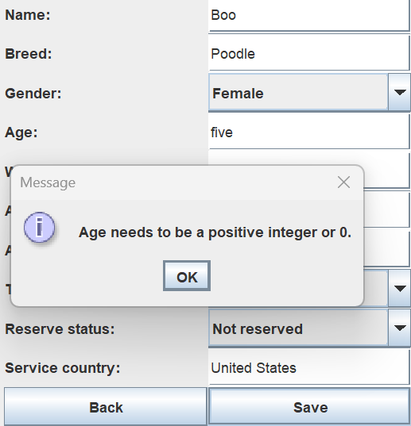
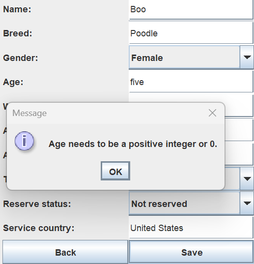

The Rescue Animal project and Driver class was made in IT 145 in 2023. It allows users to store information about animals used in rescue situations, reserve them, and view the stored names. It used the Scanner object and terminal to take input and provide output.
I chose to make a graphical user interface (GUI) for the input and output. I selected this artifact and enhancement because I aspire to be a game developer. I think this enhancement shows my ability to make intuitive and efficient user interfaces which is needed for most, if not all video games. Specifically, the way the design leads the user through the program without needing a tutorial and input validation is what I wanted to showcase.
I believe I met the second course outcome of communication as the interface clearly communicates between the user and program. I would also add that I met the third course outcome as the project created a solution for a lacking user experience.
I learned how to use Java’s swing components to create a user interface. I also learned more about making user interfaces. The main challenge I had was figuring out how the swing components worked and how I could get input from them. I could not figure out a way to loop through the components on the screen to get their input so I had to individually store and access them.


 
